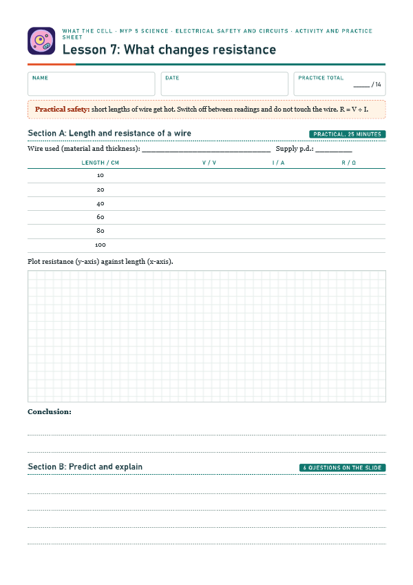

By the end of the lesson you can
- Describe how length, thickness, material and temperature change resistance
- Explain each effect using moving electrons
- Measure how the resistance of a wire depends on its length
- Explain why cables for big currents are thick
Keys: arrows or a presentation clicker move the slides, F for full screen. Slides with a red dot have a video or simulation.
Videos (all 5 minutes or less)
- 4:36
Factors affecting resistance
Sophos Education. Length, thickness, material and temperature, explained with electrons. Slide 5.
- 4:06
How the length of wire affects resistance
Science4Breakfast. The length practical, step by step, with the graph. Slide 9.
Simulations
- Lab
Circuit Practicals Lab: resistance of a wire
What the Cell. Move the clips along a wire, take readings and compare thin and thick constantan with nichrome.
- PhET
Resistance in a Wire
PhET, University of Colorado Boulder. Change the length, area and resistivity and watch R = rho L / A change.
Print and practise

Activity and practice sheet
Used in the lesson’s activities, with practice questions. Your teacher has the answers.
Download (PDF)Lesson 7 slides
All 21 slides in one file, to read again or print. The video buttons on the slides open YouTube.
Download the slides (PDF)Revising? The Revision tab on the unit page has the unit notes and review.
Class activity pack
Everything to print for the lesson’s activities: picture cards, sorting mats, station cards with their kit lists, and the teacher’s set-up notes. Print it before class.
Download the activity pack (PDF)Notes: What changes resistance
Length
A longer wire has more resistance: electrons pass more ions and have more collisions. Resistance is proportional to length, so double the length means double the resistance.
Thickness
A thicker wire has less resistance: there is more room for electrons to flow, like wires side by side. Twice the cross-sectional area means half the resistance.
Material
Wires of the same size but different materials have different resistance. Copper is low, so it is used for cables; nichrome is high, so it is used for heating elements.
Temperature
In a metal, a higher temperature makes the ions vibrate more, so electrons collide more often and the resistance increases.
The practical
Change only the length; keep the material, thickness and supply the same. Keep the current small and switch off between readings so the wire does not heat up. The graph of R against length is a straight line through the origin.
Why cable size matters
A cable that is too thin for its current has too much resistance and heats up. Homes use thicker cable for high-current circuits such as air conditioners and cookers. Unroll extension reels before using heaters.
Key words
| length | longer wire: more collisions, more resistance |
|---|---|
| cross-sectional area | the area of the cut end of a wire; bigger area, less resistance |
| resistivity (rho) | how strongly a material resists current |
| nichrome | a high-resistance alloy used in heating elements |
| fair test | only one variable is changed; the others are kept the same |
| proportional | doubling one quantity doubles the other |
| overheating | a cable too thin for its current gets hot and can start a fire |